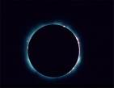
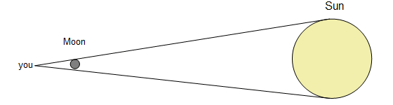

Subtended angle
Definition: The angle formed by an object at a given external point
Try this
Drag the orange dot representing the observer's eye, or the base of the flagpole. Note how the angle subtended by the flagpole to the observer's eye varies with distance.
The Moon
The moon subtends an angle of approximately 0.54° (32 arc-minutes)
to an observer on the Earth.
Of course, the moon's orbit is not constant or exactly circular, so this varies a little. But not by very much.
If you hold up your thumb at arm's length, you can easily cover the full moon.
This means your thumb subtends a larger angle to your eye at arm's length
than the moon does at 380,000 kilometers.
The Sun
The sun, on the other hand, subtends an angle of approximately 0.52°
(31 arc-minutes) to an observer on the Earth.
This is a striking coincidence. By sheer chance, it is almost the same as the angle subtended by the moon.
This is why, during a solar eclipse, that the moon almost exactly covers the sun.
A Solar Eclipse

Because they both subtend nearly the same angle to the earth, when the moon gets between the sun and the earth, it covers the
sun almost exactly, causing a solar eclipse. During the eclipse a thin glittering ring can be seen around the disk.
This is caused by hot glowing gases and other material streaming into space from the sun.
The sun is about 150,000,000 kilometers from the earth,
so clearly the sun must be vastly larger than the moon.

Not to scale
Other angle topics
General
Angle Types
Angle relationships
(C) 2011 Copyright Math Open Reference.
All rights reserved